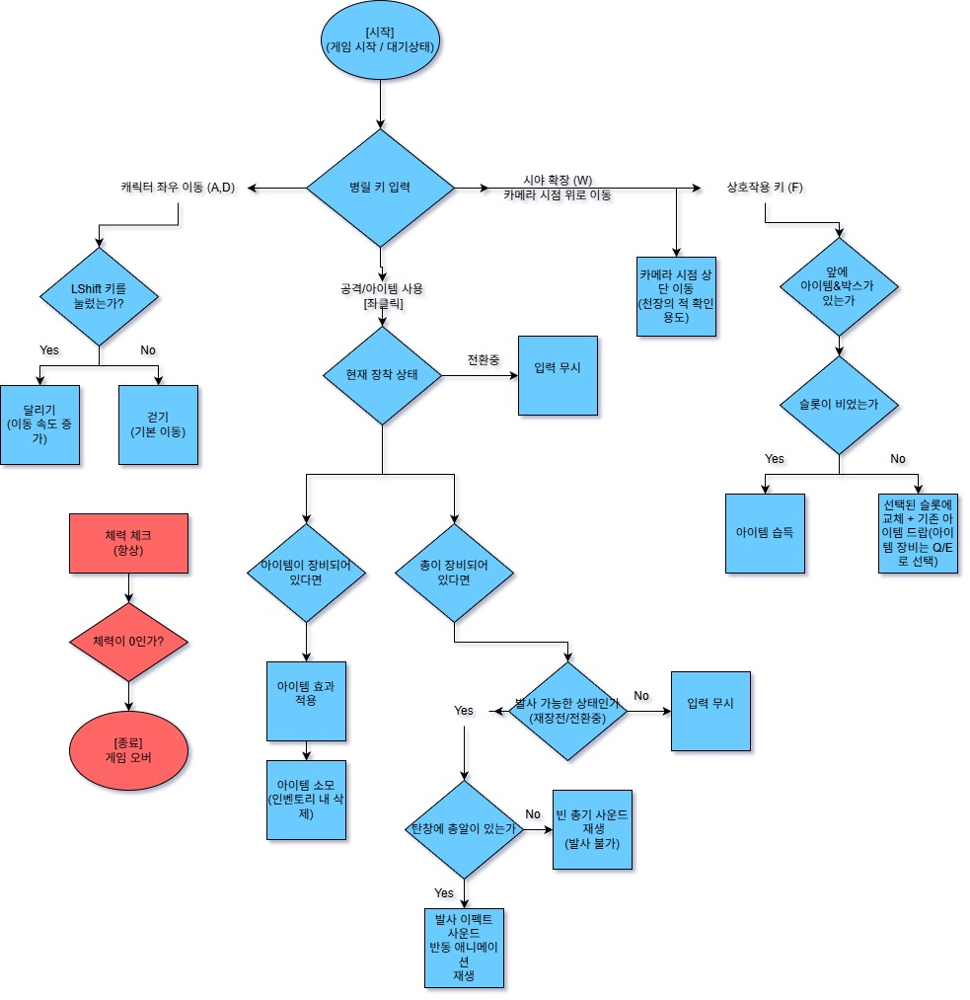
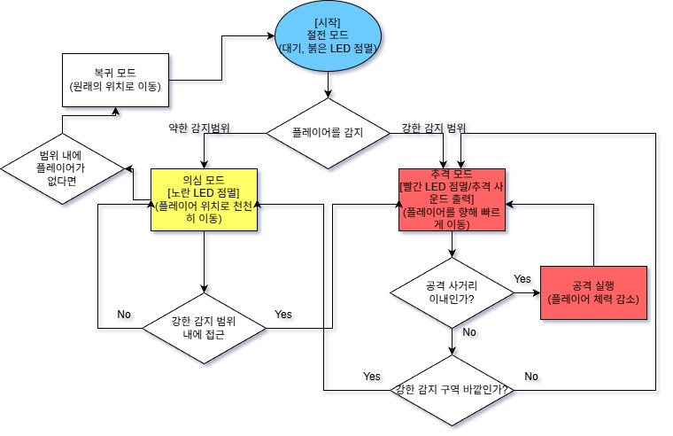
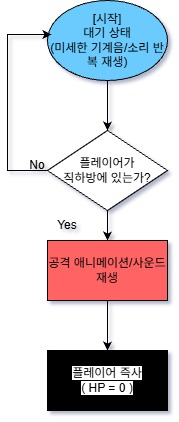
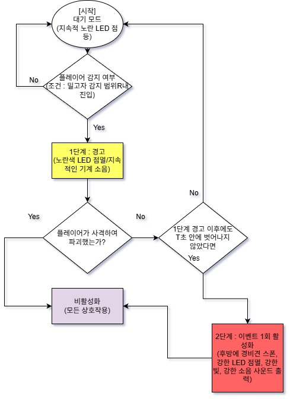
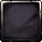
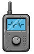
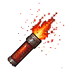
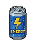
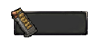

안개 속 무인 공장에서 벌어지는 자산 회수 작전.
2.5D 사이드뷰 호러 서바이벌 게임의 기획부터 구현까지.
프로젝트 개요와 장수영의 역할을 한 눈에.
| 프로젝트명 | Dark Dock (Project Two Slot) |
|---|---|
| 장르 | 2.5D 사이드뷰 호러 서바이벌 |
| 엔진 | Unity 2022.3.62f3 (URP) |
| 개발 기간 | 2026.01.21 ~ 2026.02.09 (약 17일) |
| 팀 구성 | 강다영(PD) / 장수영(GD / Graphic) / 김남해(DEV) / 송예찬(DEV) |
15개 기획 항목 중 15개 구현 + 3개 추가 구현
안개 속 무인 공장. 황금 골프채를 회수하고 살아서 나와라.
| 플랫폼 | PC (Windows 10/11) |
|---|---|
| 플레이타임 | 약 15분 (3개 스테이지) |
| 렌더링 | URP + Global Volume 포스트프로세싱 |
| Scene 구성 | 메인메뉴 → 회장실 → Level 1~3 → 엔딩 (6개) |
Dark Dock의 실제 플레이 영상과 최종 발표 자료.
플레이어, 적, 아이템, Scene 시스템의 세부 설계.
| 조작 | A/D 이동, W 상단 시야, Shift 달리기, 좌클릭 사격, 우클릭 재장전, F 상호작용 |
|---|---|
| 체력 | 최대 100 HP, 피격 시 넉백 + 무적 시간 |
| 이동속도 | 걷기 1.5 / 달리기 3.0 (가속도 40, 감속도 50) |
| 무기 | M1911 권총 — 탄창 10발, 쿨다운 0.25초, 재장전 2.3초 |
| 인벤토리 | 2슬롯 (Q: 1번, E: 2번), 가득 시 교체 + 드랍 |




| 아이템 | 효과 | 주요 파라미터 |
|---|---|---|
| 🔔 소음 미끼 | 투척 → 경비견 유인 | 투척력 6~16, 조준 거리 1.5~10 |
| 🔫 조명탄 | 발사 → 넓은 범위 밝히기 | 발사력 10, 머즐 파티클 |
| 🥤 에너지드링크 | HP 1/4 회복 (25) | 사운드: Drinkuse.wav |
| 🔋 추가 탄약 | 탄약 보충 | 탄창 10발 기준 |
서버에서 마크다운 문서를 직접 호출하여 실시간으로 렌더링합니다.
문서를 불러오는 중...
"최소 UI로 공포 분위기 유지" — HUD는 체력바, 탄약, 슬롯으로 최소화.

아이템 슬롯
소음 미끼
조명탄
에너지드링크
잔여 탄약| HUD_Canvas | 인게임 HUD — 체력바, 탄약, 아이템 슬롯 |
|---|---|
| PauseUICanvas | 일시정지 메뉴 |
| LowHPUI | 체력 부족 시 화면 비네팅 효과 |
| FPromptUI | F키 상호작용 플로팅 가이드 |
| FullScreenItemViewer | 아이템 획득 시 전체화면 상세 뷰 |
| EndingTyper | 엔딩 정산서 타이핑 연출 |
| TutorialObjective | 튜토리얼 목표 안내 |
Unity MCP로 실제 프로젝트 데이터를 추출하여 기획서와 비교 분석.
| 기획 항목 | 기획서 | 실제 구현 | 일치 |
|---|---|---|---|
| 체력 | 100 | maxHp = 100 | ✅ |
| 인벤토리 | 2슬롯 | slot1 + slot2 | ✅ |
| 에너지드링크 | 최대체력 1/4 | healAmount = 25 | ✅ |
| 아이템 교체 | Q(1번), E(2번) | Q/E 매핑 | ✅ |
| 적 3종 | 경비견/파리지옥/밀고자 | GuardHound/AmbushPlant/Squealer | ✅ |
| Scene | 4단계 | 5단계 (확장) | ⚠️ |
| 카메라 | W키 상단 확장 | CameraMove | ✅ |
| 손전등 | 시각 확인 | FlashLight 프리팹 | ✅ |
| 안개 | 시야 제한 | FogSystem + FogReveal | ✅ |
| 총 발사 | 좌클릭 | GunFire (0.25초) | ✅ |
| 소음 미끼 | 투척 유인 | NoiseBomb + NoiseSystem | ✅ |
| F키 상호작용 | 아이콘 표시 | FPromptUI | ✅ |
| 탄약 UI | 잔여 표시 | AmmoUI | ✅ |
| 탈출 | 드론 박스 | ExitPoint | ✅ |
| 이동속도 | 걷기/달리기 | 1.5 / 3.0 | ✅ |
기획 구축 → 프로세스 정비 → 완성까지의 여정.